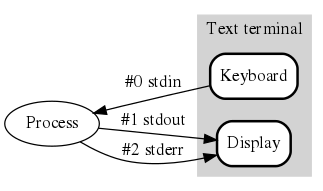

Merhaba Dünya!
Önceki kısımlarda Linux çekirdeğinin bizlere sunduğu 300’den fazla sistem çağrısı olduğundan bahsetmiştim. Bunların hepsini öğrenecek miyiz? Belki, bilemiyorum. Hepsini olmasa da çoğuna bakarız. Fonksiyonların kendisini öğrenmek zaten çok önemli değil, önemli olan mantığını öğrenmek ve faydalı bir şeyler çıkartabilmek.
Şimdi adettendir bir Merhaba Dünya yani Hello World projesi yapalım.
Standart C fonksiyonu olan printf() ekrana bu yazıyı yazan programımızı bir
yazalım.
#include <stdio.h>
int main(void)
{
printf("Merhaba Dunya!\n");
return 0;
}
Bunu örneğin gcc merhaba.c olarak derlediğimiz zaman bir a.out isminde
çalıştırılabilir bir program çıkıyor. ./a.out dediğimiz zaman da bu program
çalışıyor çıktıyı ekranda görüyoruz. Peki sistem programlama bunun neresinde? Bu
zaten standart C fonksiyonu değil mi? Evet ama geliyoruz şimdi.
Peki, önceki bölümlerde aslında tüm programların işletim sisteminin çekirdeğine yani Linux kerneline çeşitli syscall’lar yaparak bir şeyler yaptırabildiğinden bahsetmiştim. Programın çalıştığı ekrana bu yazıyı yazması da işletim sistemi desteği olmadan yapabileceği bir şey değil. O zaman bizim programımız da bir noktada işletim sistemine çağrı yapıyor olmalı değil mi? Peki bunu gözlemleyebilir miyiz? Elbette!
🛣️ strace
Linux üzerinde bu işler için kullanacağımız strace isimli bir yazılım
bulunuyor. man strace diyerek dokümanına bakabilirsiniz, açılımı trace system
calls and signals. Bu program sayesinde herhangi çalışan bir programın kernele
yaptığı syscall’ları görebiliyoruz. Ubuntu 22.04 Desktop üzerinde bende yüklü
durumda, yoksa apt install strace ile kurabilirsiniz diye düşünüyorum.
strace ./a.out diyerek bu sefer programımızın yaptığı syscalları görebiliyoruz
ama ekran bir hayli kalabalık:
alper@b:~/tmp$ strace ./a.out
execve("./a.out", ["./a.out"], 0x7ffc10249a00 /* 56 vars */) = 0
brk(NULL) = 0x649061d1d000
arch_prctl(0x3001 /* ARCH_??? */, 0x7ffdea160530) = -1 EINVAL (Invalid argument)
mmap(NULL, 8192, PROT_READ|PROT_WRITE, MAP_PRIVATE|MAP_ANONYMOUS, -1, 0) = 0x78c20b001000
access("/etc/ld.so.preload", R_OK) = -1 ENOENT (No such file or directory)
openat(AT_FDCWD, "/etc/ld.so.cache", O_RDONLY|O_CLOEXEC) = 3
newfstatat(3, "", {st_mode=S_IFREG|0644, st_size=87923, ...}, AT_EMPTY_PATH) = 0
mmap(NULL, 87923, PROT_READ, MAP_PRIVATE, 3, 0) = 0x78c20afeb000
close(3) = 0
openat(AT_FDCWD, "/lib/x86_64-linux-gnu/libc.so.6", O_RDONLY|O_CLOEXEC) = 3
read(3, "\177ELF\2\1\1\3\0\0\0\0\0\0\0\0\3\0>\0\1\0\0\0P\237\2\0\0\0\0\0"..., 832) = 832
pread64(3, "\6\0\0\0\4\0\0\0@\0\0\0\0\0\0\0@\0\0\0\0\0\0\0@\0\0\0\0\0\0\0"..., 784, 64) = 784
pread64(3, "\4\0\0\0 \0\0\0\5\0\0\0GNU\0\2\0\0\300\4\0\0\0\3\0\0\0\0\0\0\0"..., 48, 848) = 48
pread64(3, "\4\0\0\0\24\0\0\0\3\0\0\0GNU\0\302\211\332Pq\2439\235\350\223\322\257\201\326\243\f"..., 68, 896) = 68
newfstatat(3, "", {st_mode=S_IFREG|0755, st_size=2220400, ...}, AT_EMPTY_PATH) = 0
pread64(3, "\6\0\0\0\4\0\0\0@\0\0\0\0\0\0\0@\0\0\0\0\0\0\0@\0\0\0\0\0\0\0"..., 784, 64) = 784
mmap(NULL, 2264656, PROT_READ, MAP_PRIVATE|MAP_DENYWRITE, 3, 0) = 0x78c20ac00000
mprotect(0x78c20ac28000, 2023424, PROT_NONE) = 0
mmap(0x78c20ac28000, 1658880, PROT_READ|PROT_EXEC, MAP_PRIVATE|MAP_FIXED|MAP_DENYWRITE, 3, 0x28000) = 0x78c20ac28000
mmap(0x78c20adbd000, 360448, PROT_READ, MAP_PRIVATE|MAP_FIXED|MAP_DENYWRITE, 3, 0x1bd000) = 0x78c20adbd000
mmap(0x78c20ae16000, 24576, PROT_READ|PROT_WRITE, MAP_PRIVATE|MAP_FIXED|MAP_DENYWRITE, 3, 0x215000) = 0x78c20ae16000
mmap(0x78c20ae1c000, 52816, PROT_READ|PROT_WRITE, MAP_PRIVATE|MAP_FIXED|MAP_ANONYMOUS, -1, 0) = 0x78c20ae1c000
close(3) = 0
mmap(NULL, 12288, PROT_READ|PROT_WRITE, MAP_PRIVATE|MAP_ANONYMOUS, -1, 0) = 0x78c20afe8000
arch_prctl(ARCH_SET_FS, 0x78c20afe8740) = 0
set_tid_address(0x78c20afe8a10) = 30555
set_robust_list(0x78c20afe8a20, 24) = 0
rseq(0x78c20afe90e0, 0x20, 0, 0x53053053) = 0
mprotect(0x78c20ae16000, 16384, PROT_READ) = 0
mprotect(0x64906036f000, 4096, PROT_READ) = 0
mprotect(0x78c20b03b000, 8192, PROT_READ) = 0
prlimit64(0, RLIMIT_STACK, NULL, {rlim_cur=8192*1024, rlim_max=RLIM64_INFINITY}) = 0
munmap(0x78c20afeb000, 87923) = 0
newfstatat(1, "", {st_mode=S_IFCHR|0620, st_rdev=makedev(0x88, 0x3), ...}, AT_EMPTY_PATH) = 0
getrandom("\x3f\x0c\xd0\x7f\x43\xca\xde\x43", 8, GRND_NONBLOCK) = 8
brk(NULL) = 0x649061d1d000
brk(0x649061d3e000) = 0x649061d3e000
write(1, "Merhaba Dunya!\n", 15Merhaba Dunya!
) = 15
exit_group(0) = ?
+++ exited with 0 +++
Akıllarda iki soru? Bunlar ne? ve Bizim basit programdan niye bu kadar çıktı oluştu?
Bu gördüklerimiz aslında sistem çağrıları. brk(), mmap() vs bunlar hepsi
birer sistem çağrısı. İnanmazsanız man x diyerek (ya da doğrudan çoğu için
man 2 x çünkü man sayfalarında section 2 sistem çağrılarını anlatıyor)
bakabilirsiniz. Peki neden bu kadar çoklar? Hepi topu printf() çağırdık? Bizim
C programımız oldukça basit olsa bile bir programın çalışması sırasında henüz
konuşmadığımız dinamik bağlayıcı, dynamic linker gibi araçlar çalışıyor.
Yani bir C programının main(){ sonrası ilk satırına gelene kadar otomatik
olarak işletim sistemi ya da standart C kütüphanesi tarafından yapılan işler
var, burada onların izini görüyoruz.
🪨 Statik Bağlama, Static Linking
Şimdi bir şey deneyelim. Benim durumumda a.out dosyası yaklaşık 16 KB. Şimdi
gcc -static merhaba.c ile derliyorum. -static switch’i, derleyicinin
standart C kütüphanesi (libc) gibi tüm kütüphaneleri çıkan çalıştırılabilir
dosyanın içine gömmesini söylüyor. Bu durumda a.out un boyutu tam 880 KB
oluyor. Neden? Çünkü normalde a.out dosyası içerisinde olmayan, çalışma
sırasında dinamik olarak yüklenen glibc, yani GNU libc artık bu dosyasının
içerisinde doğrudan bulunuyor. Bu yüzden boyutu artıyor.
alper@b:~/tmp$ strace ./a.out
execve("./a.out", ["./a.out"], 0x7ffcd8092410 /* 56 vars */) = 0
arch_prctl(0x3001 /* ARCH_??? */, 0x7fff74ec9930) = -1 EINVAL (Invalid argument)
brk(NULL) = 0x1940000
brk(0x1940dc0) = 0x1940dc0
arch_prctl(ARCH_SET_FS, 0x19403c0) = 0
set_tid_address(0x1940690) = 31366
set_robust_list(0x19406a0, 24) = 0
rseq(0x1940d60, 0x20, 0, 0x53053053) = 0
uname({sysname="Linux", nodename="brs23-2204", ...}) = 0
prlimit64(0, RLIMIT_STACK, NULL, {rlim_cur=8192*1024, rlim_max=RLIM64_INFINITY}) = 0
readlink("/proc/self/exe", "/home/alper/tmp/a.out", 4096) = 21
getrandom("\x8e\x66\xcf\x02\x5f\x36\xb6\x55", 8, GRND_NONBLOCK) = 8
brk(0x1961dc0) = 0x1961dc0
brk(0x1962000) = 0x1962000
mprotect(0x4c1000, 16384, PROT_READ) = 0
newfstatat(1, "", {st_mode=S_IFCHR|0620, st_rdev=makedev(0x88, 0x3), ...}, AT_EMPTY_PATH) = 0
write(1, "Merhaba Dunya!\n", 15Merhaba Dunya!
) = 15
exit_group(0) = ?
+++ exited with 0 +++
Peki şimdi kaç syscall? [1] dersek bu sefer programımızın çok daha az syscall ile çalıştığını görebiliriz. Yine de fazladan syscall’lar var. Statik linkleyince sayı azaldı ama neden hala varlar? 🤔
Bu fazla syscall’lar strace kaynaklı olabilir mi? syscall sayısını 1’e indirebilir miyiz?
🏃 libc’den Kaçış
Bu kadar fazla syscall oluşmaması gerekiyor. Muhtemelen C standart kütüphanesi,
libc, açılış sırasında çeşitli syscall’lar yapıyor. Sonuçta bizim main()
fonksiyonumuz çalışmadan önce libc’nin kendi içerisindeki ilklendirme
fonksiyonları çalışıyor. libc’nin kendi ilklendirme rutininden kaçabilir
miyiz? Gelin çalışır çalışmaz hemen çıkan bir program yazalım. Ama bunu bir
syscall ile yapalım.
Bir process, bir syscall çağrısı yaparak hayatına son verebilir. Bir C programı içerisinden istediğimiz bir syscall’ı yapmak için syscall() fonksiyonunu kullanabiliriz.
#include <unistd.h>
int main(void)
{
syscall(60, 6);
}
Peki 60 ve 6 nedir? Ben bu denemeyi Intel 64-bit mimarideki bir bilgisayarda
(aslında AMD işlemci var, ama her iki işlemcinin de ISA’ı neredeyse aynı)
yapıyorum. x86_64 için baktığımızda exit syscall’ının numarası 60 olarak
verilmiş [2]. Bu sycall bir adet de parametre alıyor, o da error_code yani
process’in çıkış kodu. Ben burada 6 yazmayı tercih ettim, rastgele. Yukarıdaki
kodu çalıştırdığımızda processimiz bu kod ile çıkış yapıyor.
ay@dsklin:~/tmp/sys$ ./a.out
ay@dsklin:~/tmp/sys$ echo $?
6
$? ile BASH üzerinde son sonlanmış olan komutun, process’in, çıkış koduna
bakabiliyoruz. Bakalım strace çıktısı nasıl? Yine gcc --static ile derledim.
execve("./a.out", ["./a.out"], 0x7ffce99eed90 /* 64 vars */) = 0
arch_prctl(0x3001 /* ARCH_??? */, 0x7ffff55a7730) = -1 EINVAL (Invalid argument)
brk(NULL) = 0x1f81000
brk(0x1f81dc0) = 0x1f81dc0
arch_prctl(ARCH_SET_FS, 0x1f813c0) = 0
set_tid_address(0x1f81690) = 14908
set_robust_list(0x1f816a0, 24) = 0
rseq(0x1f81d60, 0x20, 0, 0x53053053) = 0
uname({sysname="Linux", nodename="dsklin", ...}) = 0
prlimit64(0, RLIMIT_STACK, NULL, {rlim_cur=8192*1024, rlim_max=RLIM64_INFINITY}) = 0
readlink("/proc/self/exe", "/home/ay/tmp/sys/a.out", 4096) = 22
getrandom("\x86\xef\x09\x1f\x8b\xd5\xc0\x4d", 8, GRND_NONBLOCK) = 8
brk(0x1fa2dc0) = 0x1fa2dc0
brk(0x1fa3000) = 0x1fa3000
mprotect(0x4c1000, 16384, PROT_READ) = 0
exit(6) = ?
+++ exited with 6 +++
En sondaki exit() bizimki fakat baştakiler libc kaynaklı olmalı. Mesela
getrandom() muhtemelen libc’nin random fonksiyonları için çağrılıyor. Bir C
programının ilk çalışan fonksiyonu bizler için main(). Fakat C programımız
işletim sistemi tarafından çalıştırıldığında, libc fonksiyonlarının çalışacağı
ortamın oluşturulması, çeşitli ilklendirmelerin yapılması yani adeta C
runtime ortamının oluşması için main() öncsinde çalışan kodlar var. Bizim
için kodlanmış _start() isminde bir fonksiyon var. Aslında programı
çalıştırdığımız zaman ilk bu fonksiyon çağrılıyor, fakat biz bunu görmüyoruz.
İlklendirme işleri bitince main() çağrılıyor. Neyse ki kodumuzu derlerken
derleyiciye çıkan programımızın doğrudan istediğimiz bir fonksiyondan
başlamasını söyleyebiliyoruz. Linker ayarları ile programımızın başlangıç
noktasını değiştirebiliriz. Bunun için -Wl,-emain dememiz yeterli.
ay@dsklin:~/tmp/sys$ gcc -Wl,-emain --static test.c
ay@dsklin:~/tmp/sys$ strace ./a.out
execve("./a.out", ["./a.out"], 0x7ffc433b6f20 /* 64 vars */) = 0
exit(6) = ?
+++ exited with 6 +++
ay@dsklin:~/tmp/sys$ echo $?
6
Elbette bu noktada libc’nin rutinleri çalışmadığı için libc fonksiyonlarını
kullanmak pek sağlıklı değil. Ama kullandığımız syscall() fonksiyonu basit
bir fonksiyon olduğu için problem yaşamadık. Fakat printf() de bile
problem yaşıyoruz eğer bu şekilde derlersek:
#include <stdio.h>
int main(void)
{
printf("Merhaba Dunya!");
}
ay@dsklin:~/tmp/sys$ gcc -Wl,-emain --static test.c
ay@dsklin:~/tmp/sys$ ./a.out
Segmentation fault (core dumped)
Neden? Çünkü görece karmaşık bir libc fonksiyonu kullandık ve muhtemelen printf()
in kullandığı bellek alanı gibi yerler biz _start() ın çalışmasına imkan
vermediğimiz için ayarlanmamış oldu ve segfault yedik. Bunu gdb ile debug
edebiliriz, strace pek işimize yaramayacaktır.
Yapılacaklar
İyi bir egzersiz olabilir. 🤔
Assembly
Konudan biraz saptık ama yeri gelmişken bu programı assemblyde yazmayı bir
deneyelim. Önceki yazılarda kernelin sunduğu syscall arayüzünün aslında CPU’nun
registerları aracılığı ile sağlanan bir ABI olduğundan bahsetmiştim. O halde
doğrudan assembly dili ile de benzer bir şey yapabilmemiz lazım, di mi?
Aşağıdaki kodu test.s olarak kaydediyorum:
.global _start
.section .text
_start:
mov $60, %rax
mov $6, %rdi
syscall
ve bunu gcc test.s olarak derlediğim zaman bir hata alıyorum
ay@dsklin:~/tmp/sys$ gcc test.s
/usr/bin/ld: /tmp/ccpXP1dH.o: in function `_start':
(.text+0x0): multiple definition of `_start'; /usr/lib/gcc/x86_64-linux-gnu/11/../../../x86_64-linux-gnu/Scrt1.o:(.text+0x0): first defined here
/usr/bin/ld: /usr/lib/gcc/x86_64-linux-gnu/11/../../../x86_64-linux-gnu/Scrt1.o: in function `_start':
(.text+0x1b): undefined reference to `main'
collect2: error: ld returned 1 exit status
Burada _start sembolünde bir çakışma yaşadık. Neden? Çünkü biraz önce de
bahsettiğim gibi libc’nin kendisinde de bir _start() fonksiyonu var ve linker
bizim kodumuz ile libc’yi linklemeye çalıştığı zaman aynı isimle iki fonksiyon
gördüğü için bu hatayı veriyor. Bunun linker kaynaklı olduğunu kanıtlayalım:
ay@dsklin:~/tmp/sys$ gcc -c test.s
ay@dsklin:~/tmp/sys$ objdump -D test.o
test.o: file format elf64-x86-64
Disassembly of section .text:
0000000000000000 <_start>:
0: 48 c7 c0 3c 00 00 00 mov $0x3c,%rax
7: 48 c7 c7 06 00 00 00 mov $0x6,%rdi
e: 0f 05 syscall
gcc -c ile sadece derledik fakat linklemedik. Hoş, assembly kodunu derlemek de
derlemek sayılmaz ama neyse … Daha sonra oluşan test.o isimli obje
dosyasına objdump ile baktığımızda
yazdığımız kodu da gördük. Linker çalışmadığı zaman hata almıyoruz. Şimdi burada
birkaç farklı yola sapabiliriz.
İlk olarak gcc’ye libc’yi linklememesi gerektiğini söyleyebiliriz, varsayılan olarak linkleniyor.
ay@dsklin:~/tmp/sys$ gcc -nostdlib test.s
ay@dsklin:~/tmp/sys$ ./a.out
ay@dsklin:~/tmp/sys$ echo $?
6
Bunu -nostdlib flag’i ile yapabiliyoruz. Gördüğünüz üzere yine 6 çıkış kodu
ile programımız sonlandı. strace yaparsak
ay@dsklin:~/tmp/sys$ strace ./a.out
execve("./a.out", ["./a.out"], 0x7ffee3851ce0 /* 64 vars */) = 0
brk(NULL) = 0x55d33b9ac000
arch_prctl(0x3001 /* ARCH_??? */, 0x7fff3536bf50) = -1 EINVAL (Invalid argument)
mmap(NULL, 8192, PROT_READ|PROT_WRITE, MAP_PRIVATE|MAP_ANONYMOUS, -1, 0) = 0x7f33352af000
access("/etc/ld.so.preload", R_OK) = -1 ENOENT (No such file or directory)
arch_prctl(ARCH_SET_FS, 0x7f33352afc40) = 0
set_tid_address(0x7f33352aff10) = 49474
set_robust_list(0x7f33352aff20, 24) = 0
rseq(0x7f33352b05e0, 0x20, 0, 0x53053053) = 0
mprotect(0x55d33b022000, 4096, PROT_READ) = 0
exit(6) = ?
+++ exited with 6 +++
görüyoruz. Eee, yine bir sürü syscall var. Neden? Çünkü her ne kadar biz libc’yi bağlamamış olsak da GCC varsayılan olarak dinamik linklenecek bir dosya üretiyor.
ay@dsklin:~/tmp/sys$ file a.out
a.out: ELF 64-bit LSB pie executable, x86-64, version 1 (SYSV), dynamically
linked, interpreter /lib64/ld-linux-x86-64.so.2,
BuildID[sha1]=4b78e9246619cee065433c4121fb2f4925fb034c, not stripped
Fakat -nostdlib ile beraber -static de dersek:
ay@dsklin:~/tmp/sys$ gcc -nostdlib -static test.s
ay@dsklin:~/tmp/sys$ file a.out
a.out: ELF 64-bit LSB executable, x86-64, version 1 (SYSV), statically linked,
BuildID[sha1]=221b0466ebbcf088bf2632c85376a320836f4131, not stripped
ay@dsklin:~/tmp/sys$ ./a.out
ay@dsklin:~/tmp/sys$ echo $?
6
ay@dsklin:~/tmp/sys$ strace ./a.out
execve("./a.out", ["./a.out"], 0x7ffe6cc5ffb0 /* 64 vars */) = 0
exit(6) = ?
+++ exited with 6 +++
Tam istediğimiz şey oluyor, tek bir syscall, o da exit 🥳.
İkinci bir yöntem olarak, _start yerine başka bir isim kullanabiliriz,
mesela alper. Yani _start isminin bir önemi pek yok. Bu durumda sadece linker’a
başlangıç kodunu alper den yapmasını söylememiz lazım.
.global alper
.section .text
alper:
mov $60, %rax
mov $6, %rdi
syscall
Yine aynı sonucu alıyoruz:
ay@dsklin:~/tmp/sys$ gcc -Wl,-ealper -nostdlib test.s
ay@dsklin:~/tmp/sys$ ./a.out
ay@dsklin:~/tmp/sys$ echo $?
6
Burada hala -nostdlib dememiz gerekiyor, her ne kadar _start isminde bir
çakışma yaşamıyor olsak da. Aksi taktirde varsayılan _start fonksiyonu içerisinden
main fonksiyonuna çağrı var fakat bizim kodumuzda main olmadığı için yine
link hatası alıyoruz. Kodumuzdaki fonksiyonun adına main dersek problem yok.
.global main
.section .text
main:
mov $60, %rax
mov $6, %rdi
syscall
gibi bir kod yazarsak bu sefer her libc’nin varlığı ile problem yaşamıyoruz.
ay@dsklin:~/tmp/sys$ gcc test.s
ay@dsklin:~/tmp/sys$ ./a.out
ay@dsklin:~/tmp/sys$ echo $?
6
Neyse, çok fazla uzattım ama kavramları biraz daha oturttuk sanki? Di mi?
Yapılacaklar
Şu konu hakkında başka bir yazı yazabilirsin: https://stackoverflow.com/a/61554975/1766391
📁 Her yer dosya!
Konumuza geri dönecek olursak trace çıktısının en son kısımlarında
...
write(1, "Merhaba Dunya!\n", 15Merhaba Dunya!
) = 15
...
Diye bir kısım görüyoruz. İşte programımız yazıyı ekrana burada basıyor. Biraz
karışık, 15 sayısı geçiyor ne alaka? Alakası şu, Merhaba Dunya!\n tam 15
karakter yer tutuyor, \n tek karakter. write() diye bir fonksiyondan bahsediyor
trace çıktısı? Peki neymiş bu write()?
alper@b:~/tmp$ whatis write
write (2) - write to a file descriptor
write (1) - send a message to another user
whatis write dediğimiz zaman iki adet sonuç görüyoruz. 1 olan bir shell
komutu, man 1 write ile bakabilirsiniz. 2 olan ise bizim aradığımız. man 2 write ile ya da buradan
online dokümantasyonuna bakalım.
write() en temel fonksiyonlardan biri. Bir dosyaya yazmayı sağlıyor. Bakın:
WRITE(2) Linux Programmer's Manual WRITE(2)
NAME
write - write to a file descriptor
SYNOPSIS
#include <unistd.h>
ssize_t write(int fd, const void *buf, size_t count);
DESCRIPTION
write() writes up to count bytes from the buffer starting at buf to the file re‐
ferred to by the file descriptor fd.
Pardon dosya mı? Ne alaka? Biz dosyaya yazmadık ki? Eeee, evet. Yazmadık
doğru. Biz ekrana yazdık, dosya ne alaka değil mi? Dosyaya yazacak olsam
fprintf() kullanırdım, ben gittim printf() kullandım. Doğru. Fakat Linux’ta
işler biraz karışık, ya da alışırsanız çok basit!
Everything is a file [3]
İşte Linux hatta Unix ile ilgili duyabileceğiniz en sık ifadelerden de biri
budur: Her şey bir dosyadır. Bunu, hemen anlamak kolay değil. Fakat kısaca
şunu söyleyebilirim. 70’lı yıllarda tasarımı yapılmış Unix sisteminin tasarımı
sırasında alınmış bir karar var: Unix’in eriştiği birçok donanım, sabit disk,
yazıcı, klavye gibi neredeyse tüm giriş/çıkış, I/O, cihazların kernel dışına
sanki bir dosya sisteminde bulunan, byte stream şeklinde okunup yazılabilen
bir dosyalarmış gibi gösterilir. Yani programcı normal bir dosyaya nasıl yazma
okuma yapıyorsa bir cihaza da okuma yazma yapabilir. Cihaza yapılan okuma yazma
istekleri genelde o cihazın sürücüsüne yönlendirilir. Bunun getirdiği çeşitli
kolaylıklar var fakat yazıyı dağıtmamak adına geçiyorum. Şu an bilmemiz gerek
şey, Merhaba Dunya!\n yazısının gözüktüğü terminal ekranının çıkışının da
bizim programımız için bir dosya gibi davrandığıdır.
Linux üzerinde çalışan programlar, ki bunlara process yani proses diyoruz,
çalışmaları boyunca çeşitli dosyaları açıp kapatabilirler, yazma ya da okuma
amaçlı mesela. Açılmış olan dosyalar tipik olarak bir tamsayı ile ifade
edilirler. Linux dünyasında bu tam sayılara file descriptor adı
verilmektedir. Genelde fd olarak kısaltılırlar. Dikkat ederseniz write()
fonksiyonunun açıklaması da ...by the file descriptor fd ile bitiyor. Fakat
Shell ya da bir process başka bir programı çalıştırmaya başladığı zaman tipik
olarak 3 adet dosyayı önden açar ve bunu programın en başında programın
kullanabileceği hazır hale getirir. Bunlara standard stream yani standart
akışlar denir. Bunlar:
standard input yani standart giriş,
stdinstandard output yani standart çıkış,
stdoutstandard error yani standart hata,
stderr
bağlantılardır. Açık olan her bir dosyanın bir numarası olduğundan bahsetmiştim.
İşte stdin in numarası 0, stdout un numarası 1, strderr nin ise 2
olmaktadır. Teoride bir process bu standart akışlara sahip olmadan başlatılmış
olabilir ama pratikte bu 3 akışın her zaman var olacağını düşünebiliriz.
Peki bu dosyalar ne demek? Bir program buraya yazarsa bu yazdıkları nereye gidiyor?
İşte bu da Linux sistemlerinin güzelliklerinden biri. Onu bilemiyoruz
maalesef! [4] Nasıl bilemiyoruz? Öyle şey mi olur? Programlar bilemiyor.
Bunlar diskte yer kaplayan gerçek dosyalar değiller, adeta sanal dosyalar.
İşte her şeyin dosya olması biraz da bu demek. Yavaş yavaş geliyoruz, ha? Yani
bizim programımız kendi stdout dosyasına daha da doğrusu 1 nolu dosyasına
yazıyı basıyor, stdout, stdin gibi şeyler bizim koyduğumuz isimler kolay
anlaşalım diye, program sadece numaraları biliyor. Bu dosyaya gelen byte’ların
nereye gittiğini ise bizim programımız bilemez. O, bizim programı nasıl
çağırdığımıza bağlı. Normal şartlarda, stdout ve stderr ye yapılan yazmalar
önümüzdeki terminal ekranına düşüyor. Dışarıdan bir şey okumaya değinmedik ama
bunu sağlayan stdin girişi de yine aynı yere bağlı. Şöyle düşünebiliriz:

{kind=link}
Biz shell’den ./a.out diye bir program çalıştırdığımızda başka bir şey
yapmazsak bu processin stdin i klavyeye, stdout ve stderr akışları da
ekrana bağlı olacaktır.
stdio.h, stdin, stdout, stderr
C dilinde de bildirimi stdio.h başlık dosyası içerisinde yapılan, stdin,
stdout ve stderr değişkenleri vardır. İşletim sisteminin kendisi bu isimleri
bilmez. C standartlarınca, C dilinde yazdığımız programlarda bu 3 adet standart
akımı rahat kullanalım diye bu 3 adet değişken otomatik olarak bildirilmektedir.
Bunlar anahtar sözcük değildir. Teknik olarak değişken yerine identifier
demek daha doğrudur. stdio.h içerisinde extern bildirimleri yapılmıştır.
ay@dsklin:~$ grep -A 2 "extern FILE \*stdin" /usr/include/stdio.h
extern FILE *stdin; /* Standard input stream. */
extern FILE *stdout; /* Standard output stream. */
extern FILE *stderr; /* Standard error output stream. */
Linux I/O API’larında geçen, write() gibi, fd yani file descriptor türü ile
C dilindeki stdin, stdout ve stderr yi karıştırmamak gerekiyor. fd nin
türü int tir. C dilindeki bu 3 identifier’ın türü ise FILE* dır. FILE
türü, C dilinde tanımlı bir türdür, kernel tarafından bilinmez.
Peki gerçekten bu identifier’lara karşılık gelen dosyaların file descriptor değerleri 0, 1 ve 2 mi? Bunu anlamaya çalışalım.
glibc, musl ve uclibc-ng gibi standard C kütüphanelerinin kaynak kodlarında
dolaşmak çok kolay değil. Bulabildiğim kadarıyla kütüphane kodlarında da ilgili
identifier’ların bu file descriptor değerlerine karşılık geldiğini görebiliyoruz:
uclibc-ng,
musl stderr,
musl stdout,
musl stdin,
glibc
Bu kütüphaneler geniş bir platform desteği ve verim düşünülerek yazıldığı için
kaynak kodları çok okunaklı olmayabiliyor, ama musl fena gelmedi bana.
Peki o zaman printf() yerine fprintf() de kullanabilirim? Evet!
#include <stdio.h>
int main(void)
{
printf("Merhaba Dunya!\n");
fprintf(stdout, "Merhaba stdout\n");
fprintf(stderr, "Merhaba stderr\n");
}
Yukarıdaki kodu gcc test.c şeklinde derleyip çalıştırınca bütün çıktıları
konsolda görüyoruz.
ay@dsklin:~/tmp/sys$ ./a.out
Merhaba Dunya!
Merhaba stdout
Merhaba stderr
Peki arka planda ne oluyor? strace ile bakalım.
ay@dsklin:~/tmp/sys$ strace ./a.out
execve("./a.out", ["./a.out"], 0x7ffe2d839d40 /* 64 vars */) = 0
...
write(1, "Merhaba Dunya!\n", 15Merhaba Dunya!
) = 15
write(1, "Merhaba stdout\n", 15Merhaba stdout
) = 15
write(2, "Merhaba stderr\n", 15Merhaba stderr
) = 15
exit_group(0) = ?
+++ exited with 0 +++
Bu sefer programın başında dinamik linker ve libc’den dolayı oluşan syscall’ları
attım. Dikkat ederseniz printf() ve fprintf(stdout,...) birebir aynı
syscall’ı yaptı: write(1, ...). stderr ise write(2, ...) yapmakla aynı.
Yani file descriptor 1’e yazmak, stdout’a yazmak demek. 2’ye yazmak ise
stderr’ye. Elbette bu Windows için farklı olacaktır. [5] Ama C standartları
ve buna uygun yazılmış derleyiciler bu 3 adet standart akımı işletim sisteminden
bağımsız şekilde sağlıyorlar. Nasıl sağladıkları program yazanların değil,
derleyici yazanların problemi oluyor.
write()
O zaman yukarıdaki programı doğrudan write() fonksiyonu kullanarak yazmaya çalışalım, libc kullanmadan.
Dikkat
libc dediğim çoğu zaman Standart C
Kütüphanesi’ni kastediyorum.
Fakat glibc, GNU C Kütüphanesi, gibi kütüphaneler standart C kütüphanesi
dışında syscall fonksiyonlarının implementasyonunu da çoğu zaman içeriyorlar.
Örneğin write() fonksiyonu da aslında glibc gibi kütüphanelerinin içerisinde
implement edilmiş durumda: örnek.
libc kullanmadan yapalım. dediğim zaman aslında Standart C Kütüphanesi’nden
herhangi bir bileşen, fonksiyon, kullanmaylım demek istiyorum. Linux’ta
bulunan C kütüphaneleri, standart C kütüphanesi dışında syscall’lar gibi
başka bileşenleri de içeriyor.
Fonksiyonun dokümantasyonunun SYNOPSIS kısmı şu şekilde:
#include <unistd.h>
ssize_t write(int fd, const void buf[.count], size_t count);
Bu ne demek? Fonksiyonun prototipi unistd.h içerisinde tanımlanmış:
işte kanıt
ve yapısı da görüldüğü gibi demek. Burada C dilinde olmayan 2 adet tür var:
size_t ve ssize_t. Bunlar ne?
size_t, C standartlarında olan bir tür eş ismi, yani bir typedef [6] [7].
Implementation defined bir tür fakat işaretsiz bir tam sayı türü olacağı,
unsigned int, unsigned long, unsigned long long gibi türler olmalı
durumda. Ama taşınabilirlik açısından biz bir varsayım yapmamalıyız fakat
burada
unsigned int olarak tanımlanmış.
ssize_t ise C standartlarında olan bir tür eş isim değil, POSIX
standartlarında bulunuyor. size_t nin aksine işaretli tam sayı türü olmak
zorunda ve [-1, SSIZE_MAX] arası değerleri tutabilmeli [7], [8].
SSIZE_MAX ın değeri minimum 32767 olabiliyor [9], [10], [11]. Byte
sayısı saymak için ve hata iletmek için kullanılıyor, -1 i tutabilmesinin
gereği buradan yani hata durumu tutabilme gereğinden geliyor. Mesela baktığım
glibc kaynak kodunda ssize_t türü, int olarak
tanımlanmış.
ssize_t türü, size_t nin işaretli tam sayı karşılığı olarak düşünülmüş
[12]. Bir implementasyon isterse, size_t türünü ne seçtiyse onun işaretli
versiyonunu ssize_t olarak kullanabilir, örneğin size_t türü unsigned int
ise, size_t signed_int olabilir. POSIX standartlarına göre, tek bir write()
işlemi ile SSIZE_MAX değerinden daha fazla yazma yapılması beklenmiyor. Aksi
taktirde write() geri dönüş olarak yazılan byte sayısını dönerken bu değeri
ssize_t içerisine sığdıramayabilir.
Peki, ilk denememizi yapalım.
#include <unistd.h> //write(), size_t, ssize_t
#include <string.h> //strlen(), size_t
static const char msg_a[] = "Merhaba Dunya!\n";
static const char msg_b[] = "Merhaba stdout\n";
static const char msg_c[] = "Merhaba stderr\n";
int main(void)
{
ssize_t retval;
retval = write(1, msg_a, strlen(msg_a));
if (retval != strlen(msg_a))
return 1;
retval = write(1, msg_b, strlen(msg_b));
if (retval != strlen(msg_b))
return 2;
retval = write(2, msg_c, sizeof(msg_c)/sizeof(msg_c[0]) - 1);
if (retval != strlen(msg_c))
return 3;
return 0;
}
Yukarıdaki kodda write() fonksiyonu ile doğrudan syscall yaparak aynı işi
yapıyoruz. Standart strlen() fonksiyonun geri dönüş değerinin türü size_t
olmaktadır, bu yüzden write() fonksiyonuna doğrudan verebiliriz çekinmeden.
msg_c yi yazdırırken alternatif olarak sizeof operatörü ile boyut hesaplaması
yaptırdım. sizeof ile yapılan hesaplamada NULL termination karakteri de
dahil olacağı için strlen() ile aynı değeri vermesi için 1 çıkardım.
write() fonksiyonu, başarısızlık durumunda -1 dönüyor. Fakat write() ile
istenen tüm byte’ların yazılmaması durumu da olabilir. O yüzden write() fonksiyonu
yazabildiği byte sayısını dönüyor. Diskte bir dosyaya yazıyorsak, disk dolu ise
böyle bir durum olabilir yani kısmi yazma durumu. Ya da socket programlamada
benzer durumlar olabiliyor. Biz burada aslında gerçek bir dosyaya yazmadığımız
için böyle bir problemle karşılaşmamız pek mümkün değil. Yani -1 dönmüyorsa
kısmi yazma sanki olmamalı, en azından bu basit örnekte. Fakat ben yine de
dönüş değeri tam olarak yazdığımız byte sayısına eşit mi diye kontrol etmek istedim.
Elbette burada başka problemler var fakat bunlara sonraki yazılarda değineceğim.
Örneğin, size_t türünden bir değer ile ssize_t türünü karşılaştırıyoruz.
Bu türlerin boyutları ile ilgili durumlar biraz karışık fakat bu yazıda
değinmeyeceğim, sonraki yazılara kalsın.
Assembly ile write
Son olarak assemblyde benzer bir şey yapalım. Yukarıda exit syscall’ı için
assembly ile bir uygulama yapmıştık, şimdi de write için yapalım. x86_64
bir bilgisayarda write ın syscall numarası 1 [2].
.section .data
message:
.ascii "Merhaba Dunya!\n"
.global _start
.section .text
_start:
mov $1, %rax
mov $1, %rdi
mov $message, %rsi
mov $15, %rdx
syscall
mov $60, %rax
mov $0, %rdi
syscall
Yukarıdaki kodu gcc -nostartfiles -static test.s şeklinde derliyoruz.
-nostartfiles, -nostdlib ile benzer bir etki gösteriyor, alternatif olarak
verdim.
ay@dsklin:~/tmp/sys$ ./a.out
Merhaba Dunya!
ay@dsklin:~/tmp/sys$ echo $?
0
ay@dsklin:~/tmp/sys$ strace ./a.out
execve("./a.out", ["./a.out"], 0x7ffe5b2e8d70 /* 64 vars */) = 0
write(1, "Merhaba Dunya!\n", 15Merhaba Dunya!
) = 15
exit(0) = ?
+++ exited with 0 +++
İlk syscall ile write yapıyoruz 1 nolu fd’ye, yani stdout a. Hangi register’a
ne yazacağımız calling convention/ABI ile önceden belirlenmiş durumda [2].
message bizim mesaj array imizin başını gösteren adeta bir pointer durumunda.
ay@dsklin:~/tmp/sys$ objdump -d a.out
a.out: file format elf64-x86-64
Disassembly of section .text:
0000000000401000 <_start>:
401000: 48 c7 c0 01 00 00 00 mov $0x1,%rax
401007: 48 c7 c7 01 00 00 00 mov $0x1,%rdi
40100e: 48 c7 c6 00 20 40 00 mov $0x402000,%rsi
401015: 48 c7 c2 0f 00 00 00 mov $0xf,%rdx
40101c: 0f 05 syscall
40101e: 48 c7 c0 3c 00 00 00 mov $0x3c,%rax
401025: 48 c7 c7 00 00 00 00 mov $0x0,%rdi
40102c: 0f 05 syscall
Nihai kodda 0x40200 adresine erişim görüyoruz.
ay@dsklin:~/tmp/sys$ objdump -s -j .data a.out
a.out: file format elf64-x86-64
Contents of section .data:
402000 4d657268 61626120 44756e79 61210a Merhaba Dunya!.
Bu adres, 40200, yazımızın derleyici tarafından yerleştirildiği yer.
Son olarak da bu sefer 0 çıkış kodu ile çıkıyoruz.
Özet
Bu yazıda sistem çağrısı yani syscall nedir, nasıl yapılır, assembly dilinde nasıl yapılır, libc ile ilişkisi nedir? bu tarz soruları cevaplamaya çalıştım. Biraz karışık gittik ama arka planda ne olup bittiğiniz biraz daha anladık bence. Bundan sonraki yazılarda sanıyorum dibine bu kadar girmem 🤞.